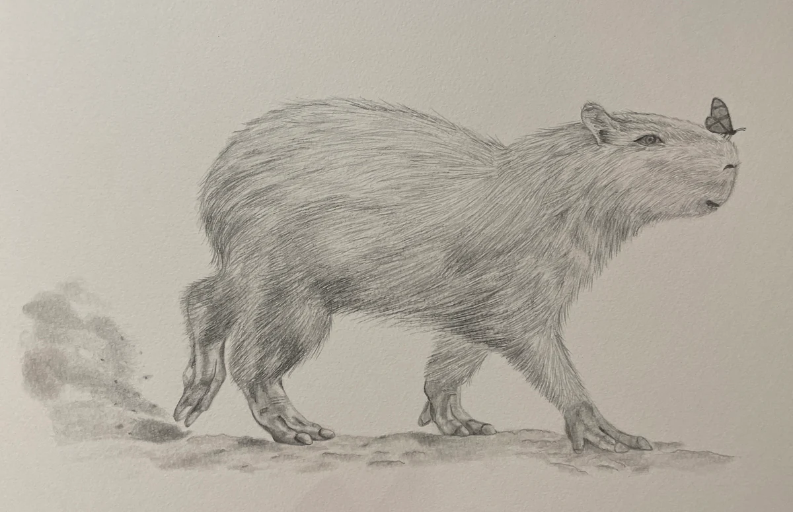

Miscellaneous Projects
A collection of drawings and design projects, including coursework from DEA 1150: Design Graphics and Visualization at Cornell University. These works explore drawing, rendering, and presentation as ways to communicate objects, spaces, and ideas.

Interior Rendering
A hand-rendered study of a furnished living room, using line and color to communicate perspective, materials, and the relationships between furniture and objects. The drawing explores how light, shadow, and texture give a two-dimensional image a sense of depth.


Still-Life Studies
A face mask, stethoscope, and bottle of hand sanitizer form a still-life composition, explored in graphite and in marker and pen. The paired studies compare how line weight, tonal contrast, and shading describe the same objects in different media.


Barn House Studies
Two interpretations of the same barn scene, one in pen and one in marker and pen. These drawings explore how line work, texture, and tonal values distinguish the roofs, timber cladding, silos, and surrounding trees while maintaining a clear architectural composition.


Griddle in the Middle
A food-truck concept developed with Alex Duncan and Ashlyn Lee. The presentation combines a floor plan and vehicle elevations with a logo, menu, packaging concept, and a rendered view of the truck in an urban setting. Together, the drawings and graphics communicate the design at the scales of the vehicle, its service, and its surroundings.
- Collaborators
- Alex Duncan and Ashlyn Lee
